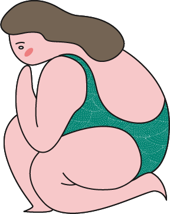
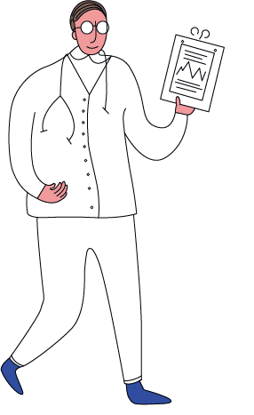
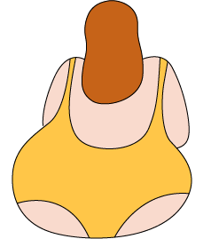

高血压患者能做运动吗？有没有什么要注意的？

高血压患者能运动：1、注意不要憋气、保持呼吸均匀 2、不做静力控制运动，比如平板支撑、马步 3、不做快速动作 4、不做大重量抗阻力运动 5、运动前后充分热身、冷身 6、注意控制情绪，保持心情平静，不要过于激动生气或兴奋 7、注意防止便秘
跑步的时候心率怎么控制？
建议利用自感用力度去控制节奏，强度控制在“还可以”、“感觉不累”的主观感受下去进行，如果感到困难就减速，可以用谈话测试法：跑步时能够连续不间断地说完一个长句，如果速度再快一点就难以连续说完；如果一定要计算心率，可以按照一下算是进行计算：最大心率=220-年龄。慢跑基本控制在最大心率的百分之六十五到百分之八十之间。

流汗就会瘦吗？
减脂的关键还是在心率强度和持续时间，流汗只是身体调节体温和代谢废物而已，有些人因为流汗多，运动完测量体重的时候下降较多，因此会有流汗瘦的比较多的错觉，其实是水分的流失而已，并不是脂肪消耗了很多。
心率越高，减脂效果越好吗？
心跳越快，就代表单位时间做功越多，需要的机械能就越多，机械能来自你身体转化的生物能，而这个生物能转化为机械能加热能的过程需要更多的氧气参与，就需要保证足够的心输出量，而单位时间心输出量等于心率乘以每博输出量，短时间内你的每博输出量增加不了多少，就只能增加心率，运输更多的氧气去你工作的肌肉组织，并带走更多这个转化过程产生的二氧化碳。身体散热也需要加快心率，把更多的水带到体表散热。所以理论上来说，的确是正比，但是，要平衡一下自己的减脂需求和心肺持续工作的能力。
什么是有氧运动呀？有氧运动是不是强度低一些效果好？

全身多数大肌肉群参与的持续时间超过2min的，运动模式稳态有规律重复的运动。比如跑步、自行车、游泳、椭圆机、快走。过去有种观点认为，持续性有氧运动，低强度的减肥效果最好。因为低强度时，脂肪供能的比例最大。比如在做某些高强度运动时，热量消耗可能1/3是燃烧脂肪提供的；而做低强度运动时可能2/3甚至更多是燃烧脂肪提供的。虽然2/3的比例很诱人，但是这种观点是错误的。
低强度运动时，虽然脂肪供能比例大，但绝对值小，所以减脂效果不如中等或以上强度有氧运动。而且中等或以上强度有氧运动，运动后消耗热量也更多。 所以低强度有氧运动虽然脂肪供能比例大，但是因为运动强度实在太低，消耗脂肪总量一般比中高强度运动时消耗的脂肪重量少，所以减脂的效率不如中高强度有氧运动。身体条件允许的话，强度不要太低。